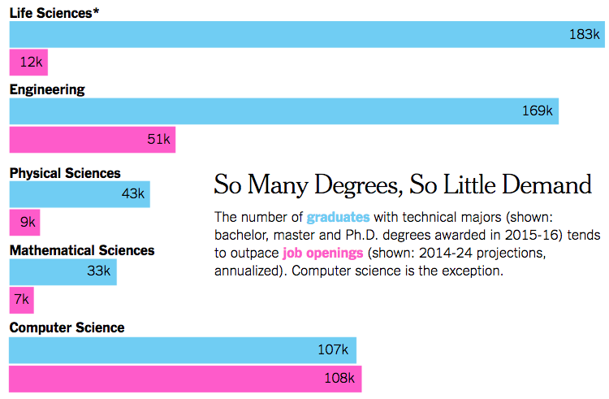
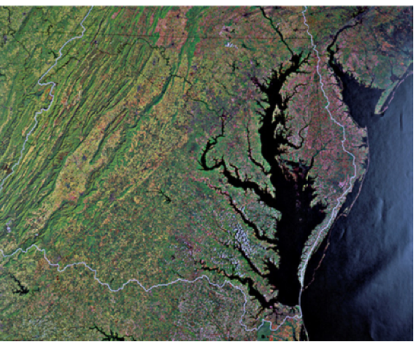

Welcome to ChE 696, On-Ramp to Data Science!¶
Topics for today:¶
- Motivation for this class
- What is data science?
- What we will cover in this class
- Get started with terminals and jupyter notebooks
This and all other lectures will be available here: https://team-mayes.github.io/che_696/html/index.html
They are jupyter (ipython) notebooks (more about these soon).
Some of the many reasons to learn Data Science (DS)¶
Many motivations–you each likely have them. My and the departments reasons include: - We all have greater and greater amounts of data, and thus would benefit from skills to extract meaning and advance our work - Practical consideration: there are not enough well trained people to fill the demand for jobs - We want to make learning data science accessible to engineers by condensing multiple prerequisites into one semester
From https://www.nytimes.com/2017/11/01/education/edlife/stem-jobs-industry-careers.html: 
From
https://www.nytimes.com/2017/11/03/education/edlife/choosing-a-college-major.html:

Specific demand for ChE’s with Data science training, as noted in the following paper, authored by employees at the Dow Chemical Company: > 88% of chemical industry executives acknowledge that data analytics will be crucial for retaining the competitive advantage in five years
Chiang, L.; Lu, B.; Castillo, I. Big Data Analytics in Chemical Engineering. Annu. Rev. Chem. Biomol. Eng. 2017, 8, 63–85 DOI: 10.1146/annurev-chembioeng-060816-101555.
The National Academies of Sciences, Engineering, and Medicine are actively calling for more data science training: > https://www.nap.edu/catalog/24886/envisioning-the-data-science-discipline-the-undergraduate-perspective-interim-report > https://www.nap.edu/catalog/25104/data-science-for-undergraduates-opportunities-and-options
Favorite metaphor from the reports: 
What is Data Science?¶
Definitions vary; Big Data often defined by four “V”s (initially 3;
Veracity is the newcomer)
https://www.michigandaily.com/section/research/big-data-how-university-michigan-navigates-ethics-unpredictability-data-science

Data science as a multidisciplinary set of skills:
http://drewconway.com/zia/2013/3/26/the-data-science-venn-diagram

Data science as a process:
https://medium.com/the-mission/deconstructing-data-science-breaking-the-complex-craft-into-its-simplest-parts-15b15420df21

What is the path to “Data Acumen”?¶
NAS reports inform this course and the following in the sequence. They suggest that DS curricula focus on: - Strong analytical basis - Oral and written communication - Use real, “messy” data - Show applications with broad impact * Discuss ethical implications, such as unreliable and/or biased outcomes * https://www.nature.com/news/there-is-a-blind-spot-in-ai-research-1.20805 * https://www.nature.com/articles/d41586-018-05469-3
More specifically, that they provide training in: - Mathematical foundations - Computational thinking - Statistical thinking - Data management - Data description and curation - Data modeling - Ethical problem solving - Communication and reproducibility - Domain-specific considerations
What resources are available at Michigan?¶
This course complements excellent computational and DS resources at Michigan. Under the umbrella of Advanced Research Computing (ARC, http://arc.umich.edu/). Sign up for the newsletter (form at bottom of the page) to find out about upcoming events. * Michigan Institute for Computational Discovery and Engineering (MICDE), http://micde.umich.edu/ * Offers both a certificate and PhD that can be earned in parallel to your primary grad degree, http://micde.umich.edu/academic-programs/ * Seminar series, symposia, … - CSCAR (http://cscar.research.umich.edu/) provides consulting services and training opportunities in data science, statistics, and advanced research computation. - Michigan Institute for Data Science (MIDAS, http://midas.umich.edu/) - Hosts training and activities, including a Data Science Team - Offers a Certificate in DS
Why did we add this course and what will we cover?¶
This course aims to create a new tributary in data science. Most engineering core curricula (aside from CS) do not include the following topics that are prereqs for DS and ML learning courses, including:
- Coding skills
- Example: at UMich, Matlab is taught to freshman, but many students do not continue to use it and thus do not become confident programmers. Additionally, Matlab is not generally used in industry. Python is widely used in academia and industry, and continues in grow in importance.
- Coding in python will be central to this course
- Linear algebra
- We will not (cannot) go over all the material that would be taught in a pure linear algebra class
- We will focus on how computers use linear algebra to solve problems. We will include key terms and numerical implementation.
- Probability and statistics
- The focus will not be theory but implementation and how they form the foundation for many DS techniques
We will not be able to cover all of the these topics in depth. I will introduce you to basics in each area that all of you should learn. I will point to resources for self-study that will likely be of great use to you, but you will not be responsible for knowing for this course.
Course logistics¶
- This is meant to be a practical class to provide skills to improve your productivity in future endeavors
- Please bring a laptop to each class. If you do not have one, please find a buddy with a laptop to work with
- We will be using a variety of resources, primarily free to the public or free to you via the Michigan library
- HW will be assigned approximately every week, highlighting key concepts from the in-class material and related text
- Grading will be 25% class engagement (in-class and/or piazza and/or study groups), 25% HW, 20% project, and 30% final exam. Final grades will be based on a demonstration of mastery of the material (A = formed an excellent foundation; B = good foundation with gaps in a few areas; C = some understanding with significant gaps)
- All questions should be posted to Piazza, unless they truly only relate to you (e.g. illness, conflict…; then directly email me) so everyone can benefit from the discussion.
Next up….¶
Intro to bash!